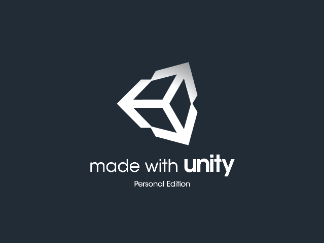
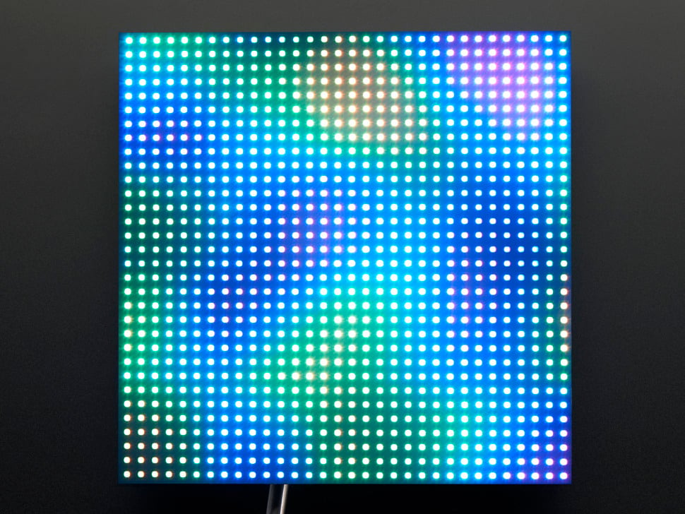
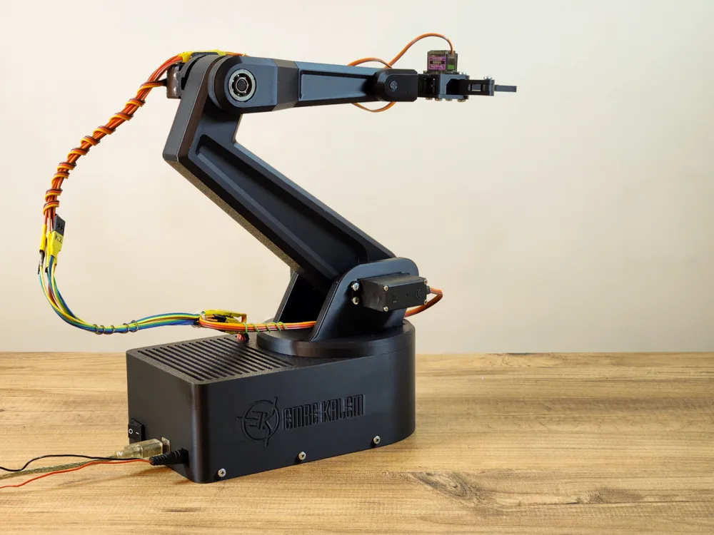

Unity Games

Independently developed games implementing gameplay systems, algorithms, graphics, and interactive mechanics, built to explore software architecture and new programming concepts.
Technologies: C#, Unity
2020 – Present

Independently developed games implementing gameplay systems, algorithms, graphics, and interactive mechanics, built to explore software architecture and new programming concepts.
Technologies: C#, Unity
2020 – Present
This site: a personal portfolio hosted on GitHub Pages, with a shared navbar and footer loaded by JavaScript so the markup is not duplicated across pages.
Technologies: HTML, CSS, JavaScript

An Arduino-based RGB LED matrix display, integrating a microcontroller with custom LED wiring to create an interactive hardware/software system.
Technologies: C++, Arduino
2020 – Present

A robotic arm driven by motors and programmed on an Arduino microcontroller.
Technologies: C++, Arduino
2020 – Present